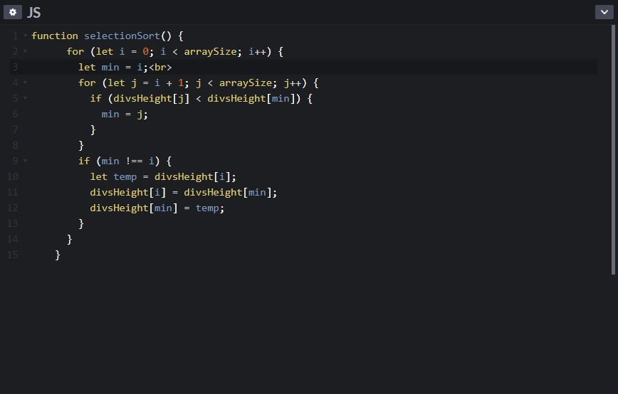

Bubble sort is a simple sorting algorithm that compares adjacent elements and swaps them is they are not in order. The worst case complexity of this algorithm is O(n)^2, where n is the number of items.
To implement a bubble sort algorithm, we start by comparing the element arr[0] and arr[1], if these elements are out of order (ie arr[0] > arr[1]), we swap them. If not, our algoirithm moves on. Our algorithm then moves to compare the elements arr[1] and arr[2], performing a comparison on these two elements and swapping them when the condition is met. This process continues untill the array is sorted. If, the array has passed through one full iteration without swapping any elements, the loop is broken, and the algorithm completes.
